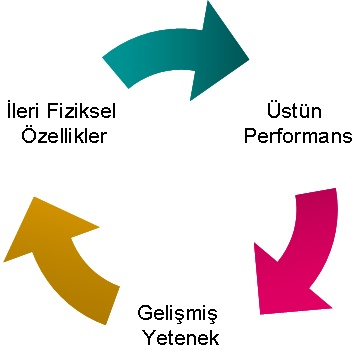
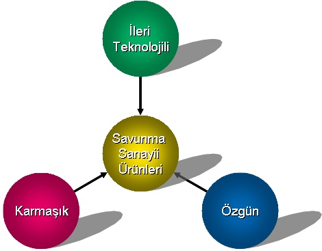
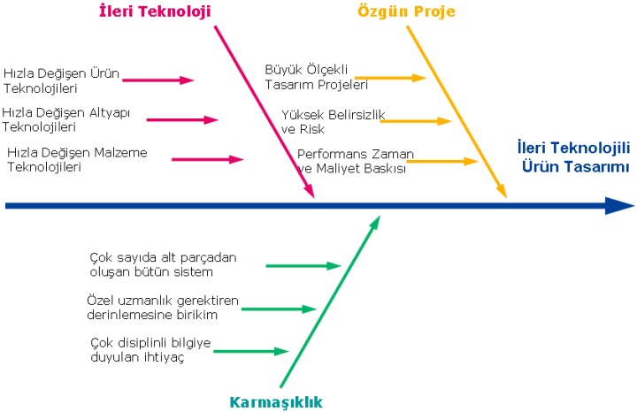
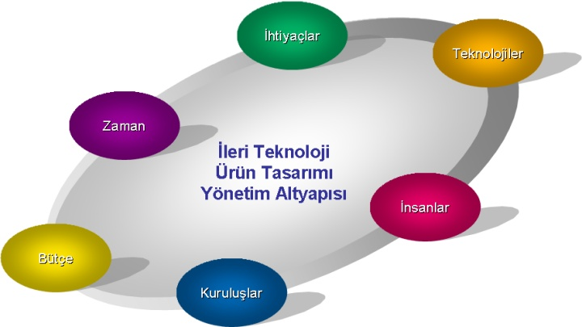

Elif Baktýr
Nisan 2006, Ankara
Teknolojik ve Kurumsal Ýþbirliði Merkezi (TEKÝM)
www.tekim.com.tr
Not: Orijinal olarak TurkCADCAM.net
Dergisi 2. Sayýsý için hazýrlanmýþ bu
makale, ilk kez Þubat 2007'de TurkCADCAM.net Portalý'ndan
yayýnlanmaya baþlamýþtýr.
Savunma Sanayii Ürünleri
Savunma sanayi ürünlerinde üstün performans ve geliþmiþ yeteneðin yaný sýra ileri fiziksel özellikler aranýr (Þekil 1). Savunma sanayi ürünlerinde tespit, teþhis ve tanýma iþlemlerinin kýsa sürede, yüksek çözünürlükte ve doðru olarak yapýlmasý hayati önem taþýr. Bir hedefin özelliklerinin ve yerinin tespitinde artan hassasiyet, ona yönlendirilecek karþý tedbirin isabetini arttýrýr. Ürün menzilinin biraz daha artarak daha uzaktaki, daha küçük bir hedefin doðru olarak algýlanabilmesi, kabiliyetlerinin anlaþýlabilmesi, bulunduðu coðrafi koordinatlarýn saptanabilmesi, uygulanabilecek en etkin karþý tedbirin oluþturulmasý ve uygulanmasý için ürün tasarýmýnda yoðun çalýþmalar gerçekleþtirilir.

Þekil 1: Savunma Sanayi Ürün Özellikleri
Savunma sanayi ürünlerinin oldukça yetenekli olmasý beklenir. Ürünlerde gözlenen alandaki tüm olaný biteni takip edebilecek kadar geniþ bir bakýþ açýsýnýn yanýnda, istenildiði zaman bir hedefteki tüm deðiþimleri izleyebilecek kadar derinlemesine bir bakýþ açýsýnýn da olmasý istenir. Ayrýca savunma sanayi ürünlerinin yeteneklerinin sürekli geliþtirilmesi sonu gelmeyen bir yarýþ gibidir. Hedef yeteneklerinin geliþmesi, ürün yeteneklerinin geliþmesine, ürün yeteneklerinin geliþmesi hedef yeteneklerinin geliþmesine neden olur. Bunlara ek olarak birçok ürünün hareket halindeyken de yüksek performansla çalýþmasý istenir. Savunma sanayi ürünlerinde özel önem verilen bu doðrultudaki isteklerin karþýlanabilmesi için oldukça geliþmiþ yeteneklere sahip olmalarýna ve yeteneklerin sürekli geliþtirilmesine tasarým çalýþmalarýnda dikkat edilir.
Ýleri fiziksel özellikler, yani çeviklik, saðlamlýk, fiziksel ve elektronik anlamda görünmezlik, her türlü ortamda ve koþulda, uzun süre çalýþabilirlik savunma sanayi ürünlerinde olmasý istenen özelliklerdir. Savunma kabiliyetleri hýzlý hareket edebilme yeteneði ile doðrudan iliþkilidir. Geliþen þartlara göre her türlü ortam ve koþullarda hýzla yer deðiþtirebilmek ve aktif hale gelmek en küçük cihazlardan en büyük sistemlere kadar tüm savunma sanayi ürünlerinde istenen özelliktir. Savunma sanayi ürünlerinin tasarýmýnda göz önüne alýnan, kolay taþýnabilirlik ve hýzlý konuþlandýrýlabilirlik ürünlere çeviklik kazandýrýr. Savunma sanayi ürünlerinin günde 24 saat ve haftada 7 gün tam performans çalýþmasý gerekmektedir. Görevdeki en ufak aksama ve performanstaki azalma tahammül edilemezdir. Savunma sanayi ürünlerinin her türlü çevre þartýnda daima hazýr olmalarý ancak tasarým sýrasýnda saðlamlýða ve verilen özel önemle elde edilebilir. Savunma sanayi ürünlerinin kendilerinin hedef konumuna düþmemeleri için tespit edilemez olmalarý gerekmektedir. Bunun için fiziksel ve elektronik anlamda görünmezlik çok önemlidir. Ürünlerin yapýsal tasarýmlarýnda, malzeme seçimlerinde, yarattýklarý elektronik izlerde bu durum göz önüne alýnýr. Ayrýca bütün bu özelliklerin saðlanmasý için ürünler mümkün olduðunca az enerji ile çalýþmalýdýrlar.
Bütün bu gereksinimlerin karþýlandýðý savunma sanayi ürünleri, ileri teknolojili, karmaþýk ve özgün ürünlerdir (Þekil 2).
- Ürünlerde ileri teknoloji kullanýmý: Savunma sanayi ürünlerinde en son ve ileri teknolojilerin getirdiði tüm olanaklar son damlasýna kadar kullanýlýr. Ýleri teknoloji olma özelliði, ürünlerde kullanýlan algoritma ve çalýþma prensiplerinden, malzemelere, bilgisayar elemanlarýndan, platform teknolojilerine kadar her þeyi kapsar.
- Ürünlerin karmaþýklýðý (complexity): Savunma sanayi ürünleri çok farklý disiplinlerde derinlemesine bilgi birikimi gerektiren bir karmaþýklýða sahiptir. Bu nedenle temel bilimlerden (biyoloji, kimya v.b. gibi), uygulamalý bilimlere (elektronik, bilgisayar, makine v.b. gibi) kadar geniþ bir yelpazede bilgi birikimine ihtiyaç vardýr.
- Özgün ürünler: Savunma sanayi ürünleri genellikle ülke gereksinimleri doðrultusunda özel sipariþlerle üretilen özgün ürünlerdir.

Þekil 2: Savunma Sanayii Ürünleri
Ürün Geliþtirme
Savunma sanayi ürünlerinin ileri teknolojili, karmaþýk ve özgün ürünler olmasý ürün geliþtirme çalýþmalarýný doðrudan etkiler (Þekil 3). Savunma sanayi ürün geliþtirme projeleri teknik riskleri çok yüksek olan, deðiþik disiplinlerden, konusunda derinlemesine bilgi sahibi olan çok sayýda kiþinin bir araya gelmesini gerektiren, zaman ve bütçe kýsýtlarý olan kritik projelerdir.
Savunma sanayi ürünlerinin ileri teknolojili olma özelliði tasarým çalýþmalarýndaki riski arttýrýr. Yeni ve hýzla geliþen teknolojilerin ürünlerin içerisinde yer almasýný saðlamak geliþmeleri yakýndan takip edilmesini, çýkan malzemelerin izlenmesini, çeþitli deneme ve testler yapýlmasýný ve bu konuda geliþtirme amaçlý altyapýnýn kurulmasýný gerektirir.
Savunma sanayi ürünlerinin karmaþýklýk özelliði ise tasarým çalýþmalarýnda deðiþik disiplinlerden çok sayýda kiþinin bir araya gelmesini gerektirir. Özel uzmanlýk alanlarýnda ihtiyaç duyulan derinlemesine birikimin firma içinden temin edilemediði durumlarda deðiþik kuruluþlarla iþbirliðine gidilir. Farklý disiplinlerden ve hatta farklý kuruluþlardan gelen kiþilerin birikimlerinin bir araya getirilerek sentezlenmesi tasarým çalýþmalarýnda çok kritiktir.
Savunma sanayi ürünlerinin özgün ürünler olmasý ise tasarým çalýþmalarýna maliyet ve zaman kýsýtlarý baskýnýn yoðun olarak yaþanmasýna neden olur. Bilinmezler, belirsizlikler ve risklerle dolu, çok büyük ekiplerle yürütülen çalýþmalarýn, istenilen özelliklerdeki bir ürünle sonuçlanmasý, zamanýnda tamamlanmasý ve öngörülen bütçe sýnýrlarý içerisinde kalmasý hayati önem taþýr. Günümüzde sadece savunma sektörü deðil, bilgi ve iletiþim teknolojileri sektörü, makine ve malzeme sektörü gibi ileri teknolojili ve bilgi yoðun tüm sektörlerde ürün tasarýmýnda benzer bir durum farklý ölçeklerde yaþanmaktadýr.

Þekil 3: Savunma Sanayii Ürün Tasarýmý
Savunma sanayi ürünlerinin tasarým çalýþmalarý çeþitli disiplinlerden konularýnda uzman kiþilerin ihtiyaç duyulan teknik özellikleri gerçekleþtirmek üzere kaðýt üzerinde yaptýklarý çözümlemelerle baþlar. Kaðýt üzerinde yapýlan teknik çözümlemeler, prototip ve ölçümlerle desteklenir. Ürünün gerçekleþtirilmesi için teknik riskler, bu risklerin nasýl yönetileceði, gereken teknolojiler, nasýl saðlanacaðý, ihtiyaç duyulan kaynaklar, nasýl temin edileceði ve tüm bunlarýn bir araya getirildiði tasarým stratejileri yapýlan çözümlemelere dayalý olarak belirlenir. Yapýlacak çalýþmalarýn planlanmasýyla bütçe ve zaman tahminleri yapýlýr. Geliþtirme sözleþmesinin imzalanmasýyla çalýþmalar baþlar.
Deðerlendirmeler
Savunma sanayiinde gerek tek firma içerisinden gerekse farklý kurum ve kuruluþlardan, alanlarýnda uzmanlaþmýþ kiþilerin, hýzla geliþen teknolojilerden yararlanarak, zamanýnda ve uygun bütçe koþullarýnda, ihtiyacý karþýlayacak çözümler üretmesi için bütün parametrelerin bir araya gelmesini saðlayan güçlü bir yönetim altyapýsýna ihtiyaç duyulur. (Þekil 4).

Þekil 4: Savunma Sanayiinde Ürün Tasarýmý Yönetim Altyapýsý
Altyapý, birikimlerine ihtiyaç duyulan insanlarý ve teknolojik yenilikleri bir araya getirerek etkileþimlerini saðlamalýdýr. Yönetim altyapýsý ayrýca ihtiyaçlarýn çözümü için çalýþmalarýn yönlendirilmesini, ürünlerin hedeflenen zamanda tamamlanmasýný ve bütçe sýnýrlarý içerisinde kalýnmasýný saðlamalýdýr. Savunma sanayii ve benzeri gibi bilgi yoðun sektörler baþarýlý olabilmek için tasarým çalýþmalarýný etkileyen yönetim altyapýsý olanaklarýný sürekli geliþtirmek zorundadýrlar. |